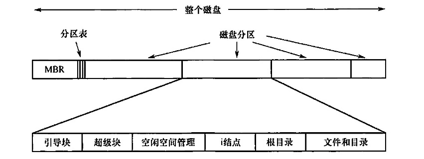
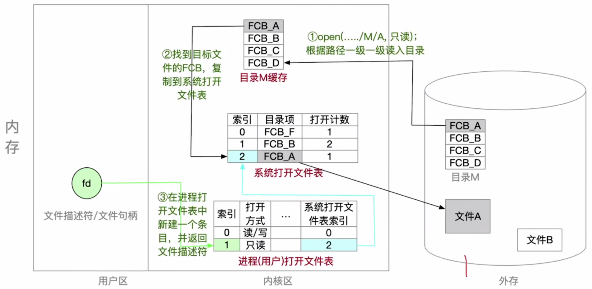
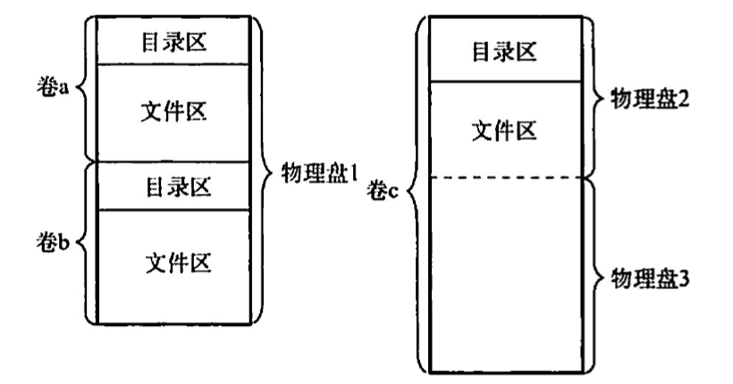
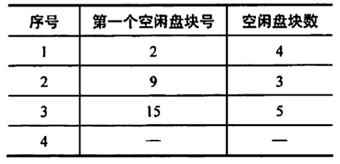
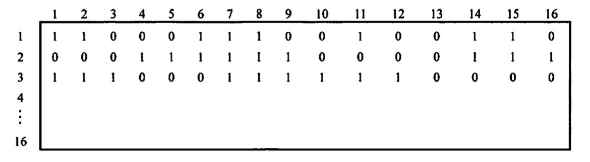
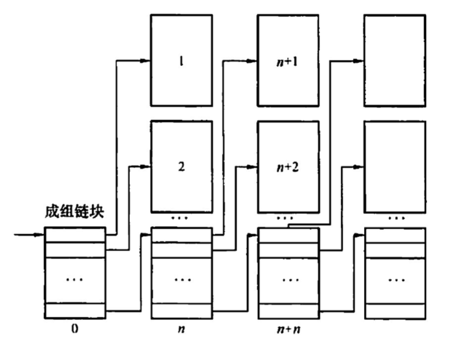
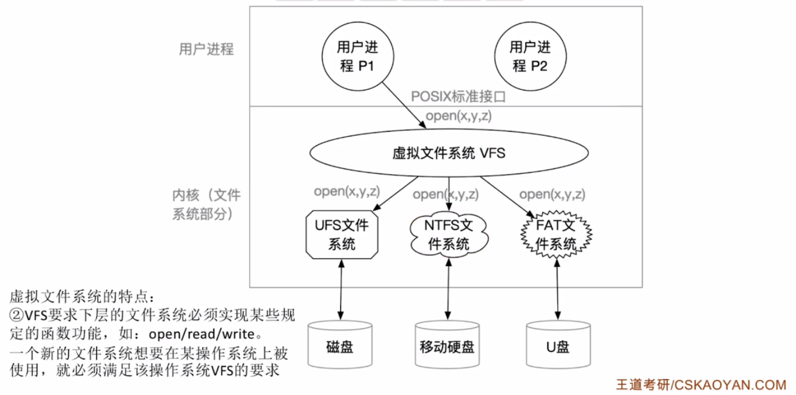

2022.09.21

文件系统中空闲块的信息，可以使用位示图或指针链接的形式给出。后面也许跟的是一组i结点（i结点区），每个文件对应一个结点，i结点说明了文件的方方面面。接着可能是根目录，它存放文件系统目录树的根部。最后，磁盘的其他部分存放了其他所有的目录和文件。
文件系統在内存中的结构
内存中的信息用于管理文件系统并通过缓存来提高性能。这些数据在安装文件系统时被加载，在文件系统操作期间被更新，在卸载时被丢弃。这些结构的类型可能包括：
1）内存中的安装表(mount table），包含每个已安装文件系统分区的有关信息。 2）内存中的目录结构的缓存包含最近访问目录的信息。对安装分区的目录，它可以包括个指向分区表的指针。 3）【系统打开文件表】（整个系统只有一张）整个系统的打开文件表，包含每个打开文件的 FCB 副本及其他信息。 4）【进程打开文件表】（包含在PCB中）每个进程的打开文件表，包含一个指向整个系统的打开文件表中的适当条目的指针，以及其他信息
为了创建新的文件，应用程序调用逻辑文件系统。逻辑文件系统知道目录结构的格式，它将为文件分配一个新的 FCB。然后，系统将相应的目录读入内存，使用新的文件名和 FCB 进行更新，并将它写回磁盘。
一旦文件被创建，它就能用于 IO。不过，首先要打开文件。系统调用open0将文件名传递给逻辑文件系统。调用open0首先搜索整个系统的打开文件表，以确定这个文件是否已被其他进程使用。如果己被使用，则在单个进程的打开文件表中创建一个条目，让其指向现有整个系统的打开文件表的相应条目。该算法在文件己打开时，能节省大量开销。如果这个文件尚未打开，则根据给定文件名来搜索目录结构。部分目录结构通常缓存在内存中，以加快目录操作。找到文件后，它的 FCB 会会复制到整个系统的打开文件表中。该表不但存储FCB，而且跟踪打开该文件的进程的数量。然后，在单个进程的打开文件表中创建一个条目，并且通过指针将整个系统打开文件表的条目与其他域(如文件当前位置的指针和文件访问模式等）相连。调用open0返回的是一个指向单个进程的打开文件表中的适当条目的指针。以后，所有文件操作都通过该指针执行。一旦文件被打开，内核就不再使用文件名来访问文件，而使用文件描述符(Windows 称之为文件句柄）。
当进程关闭一个文件时，就会州除单个进程打开文件表中的相应条目，整个系统的打开文件表的文件打开数量也会递减。当所有打开某个文件的用户都关闭该文件后，任何更新的元数据将复制到磁盘的目录结构中，并且整个系统的打开文件表的对应条目也会被删除。



空闲链表法
空闲盘块链：把空闲盘块拉成一条链，需要空间时依次分配。
空闲盘区链：把空闲盘区（盘区包含多个盘块）拉成一条链，需要空间时依次分配。
位示图法
0表示空闲，1表示已分配
⚠️注意下标从1开始⚠️


## 虚拟文件系统

【答案】：B
【答案】：A->B
【答案】：B
【答案】：B->C
【答案】：32bit代表32块。100/32=3...4，B
【答案】：D
【答案】：409612/1024=400...12。400/8=50，50+32-1=81，80+1=82，C
【答案】：C -> B. 文件分配表（FAT）的表项与物理磁盘块一一对应，并且可以用一个特殊数字 -1表示文件的最后一块，用 -2 表示这个磁盘块是空闲的，因此文件分配表（FAT）不仅记录了文件中各个块的先后链接关系，同时还标记了空闲的磁盘块，操作系统可以通过FAT对文件存储空间进行管理，即 IV 正确。